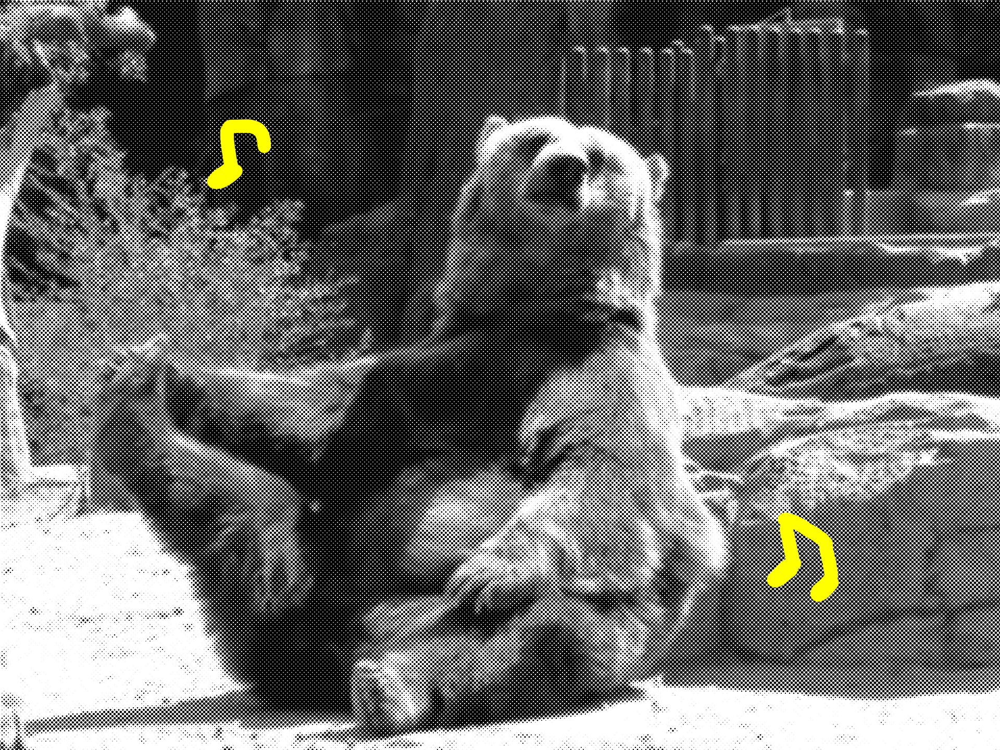
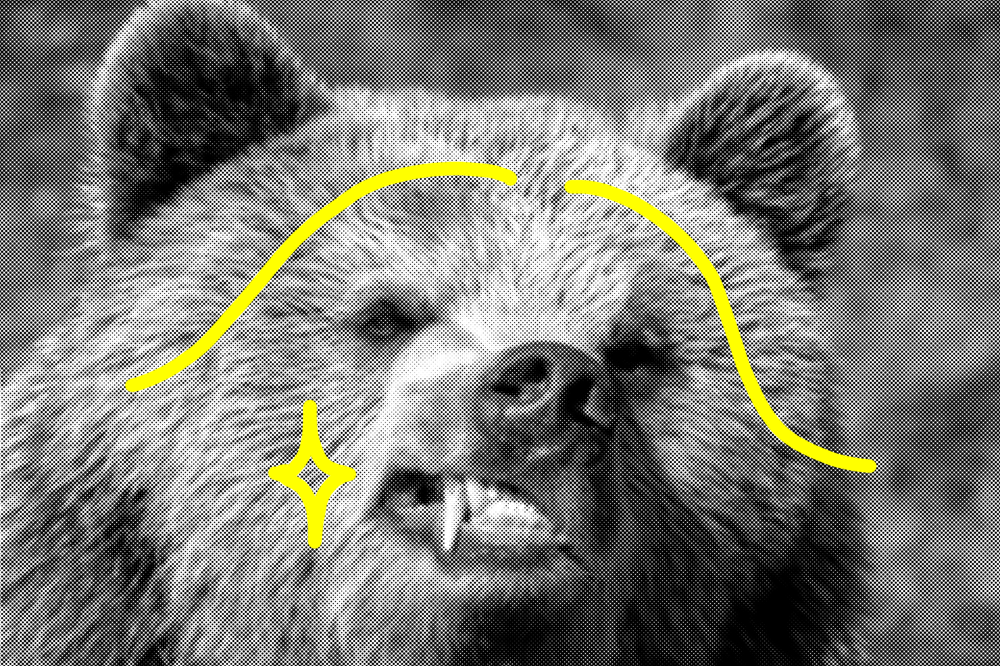

겨울방학의 대학생은 동굴 속에서 겨울잠을 자는 한 마리의 곰과 다르지 않다. 그들은 하루의 1/3을 잠으로 보내고, 끼니를 잘 챙기지 않으며, 꾀죄죄하여 몹시 볼품 없다. 지난 겨울방학의 나도 그랬다. 코로나 시대를 아직 실감하지 못하고 개강에 대한 설렘을 지녔던 그때, 나는 동굴에서 갓 나온 비주얼을 벗어던지고 새로운 나를 맞이하고 싶었다.
그러던 중 눈에 띈 것이 있었다. 바로 유희왕 머리, aka 브릿지 염색이다. 유행은 돌고 돈다더니 초등학생 시절 반에서 가장 까불고 앞니가 빠진 남자애들이 했던 머리가 대한민국을 넘어 전 세계를 강타한 유행이 되었다. 오죽하면 컴백하는 아이돌 그룹 멤버 중 한 명은 무조건 이 머리를 장착하고 있다. 그렇다면 좋아, 나도 기꺼이 편승해주지! 대신 아주 약간의 돈과 수고만으로 기분전환을 하겠어.
전세계 유희왕 스타일 분석
77억 인구이니 만큼 유희왕의 종류도 다양하다. 그래서 준비했다. 2020 브릿지 통계! 스타들의 사례를 참고해서 당신의 입맛에 꼭 맞는 브릿지 구획을 정해보자. 결과는 아래와 같다.
① 군데군데
어느 각도로 사진을 찍어도 “나 탈색했소!”하고 주장할 수 있는 스타일. 개구장이 같은 귀여움을 자아낸다. 탈색 구획을 명확히 정하지 않아도 되기 때문에 실패 확률이 적다는 장점이 있다. 만약 당신이 심각한 똥손이라면 추천!
② 앞머리만
2020년을 가장 뜨겁게 달군 스타일이다. 유행의 선두주자라면 반드시 시도해 볼 것. 테크노 전사 같은 이 스타일은 과거의 향수를 강하게 불러일으킨다.
③ 음밀하게 (?)
서프라이즈를 좋아하는 당신에게 추천하는 스타일이다. 겉으로 보기에는 달라진 게 없지만, 머리를 묶는 척 슬쩍 쓸어 올리는 순간 주위 사람들은 모두 당신에게 반하고 말 것. 탈색을 하고 싶지만 사회적 지위가 신경쓰이는 사람들에게도 강력 추천!
변신!
☞ 대한민국에서 가장 저렴한 탈색약 Top2 비교분석

지루하지 않게 탈색 시간을 버티는 법
머리 색이 빠지는 약 30여분의 시간 동안 당신은 무엇을 할 것인가? 일단 따라해봐!
☞가장 좋아하는 락 음악을 틀고 왼쪽 어깨 5번 오른쪽 어깨 5번 비둘기처럼 고개를 까딱까딱 움직인다☞주의 : 신나는 티를 내면 안돼! 내적댄스 비율을 90%로 유지할 것☞남동생 방에 들어가서 괜히 시비 걸다가 쫒겨나자☞냉장고를 열고 물 2잔을 연속으로 들이킨다☞강아지 뽀삐 앞에서 단독 콘서트 하면서 감동의 눈물을 흘려주고☞지루해 질때쯤 괜히 손톱 깎기☞발가락 스트레칭 헛둘헛둘☞슬슬 머리를 감아볼까☞끝~!

끝내며 - 유희왕의 에티튜드
① 포즈 연습
식상한 ‘김치’포즈는 절대 금물. 왼쪽 손을 바지 주머니에 반쯤 찔러 넣고 허리를 살짝 구부리자. 시선은 정면을 향하지 말고 사선을 향하는 것이 좋다. 자신이 없다면 자연스럽게 뒤도는 것도 좋다. 마지막으로 거북목을 탑재해주면 완벽한 멋쟁이의 포즈 완성. (※ 주의 : 미대생의 심각한 거북목은 오히려 마이너스 요소.)
② 걸음걸이 연습
횡단보도 신호가 10초 남았을 때 당신은 어떻게 할 것인가? 빠르게 뛰어서 건널거라고? 안된다. 멋쟁이 정신은 선비 정신과 일맥상통하는 부분이 있다. 아무리 바빠도 절대로 뛰지 말 것. 항상 여유로운 걸음걸이를 유지하는 것이 중요하다.
③ 멋쟁이의 마음가짐
진정한 멋쟁이는 외면 뿐만 아니라 내면을 함께 가꾸어야 한다. 항상 남을 배려하고, 존중하자. 자존감과 자존심을 동일하게 유지하도록 노력하며, 롤 모델을 정할 수는 있지만 남을 과도하게 우러러보지 말자.